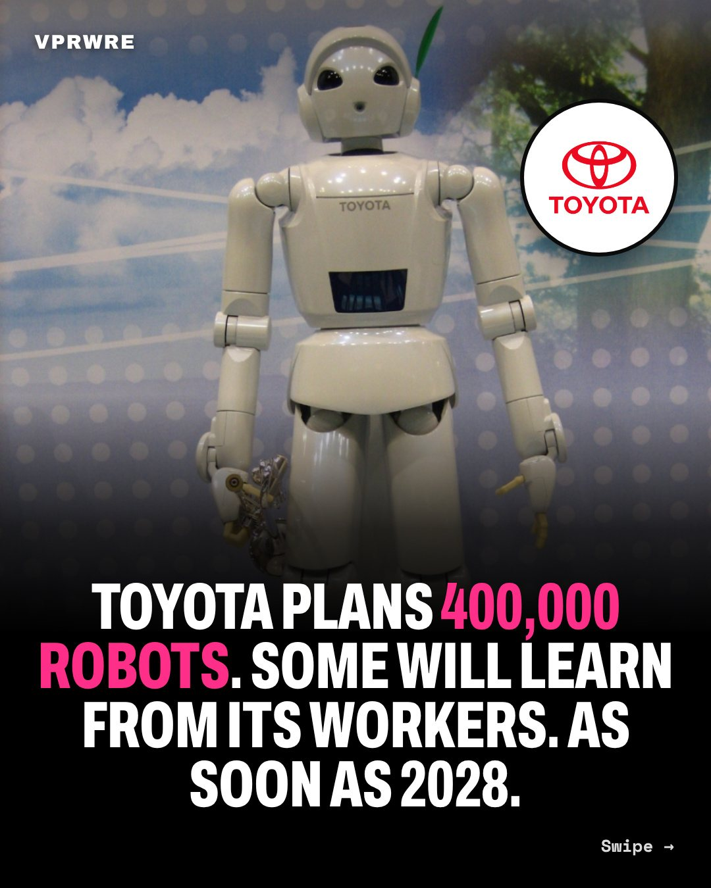

Work
Toyota plans 400,000 robots. Some will learn from its workers. As soon as 2028.
Toyota plans 400,000 robots, and wants its best workers to teach some of them their craft. As soon as 2028.

Nikkei reported Sept 18 that the Toyota group will add 400,000 in-house robots to plants worldwide from 2028 or later. Its humanoids will learn from Toyota’s 18,000 “takumi,” its master craftsmen.
Then the lesson flips. Toyota’s Hiroki Nakajima, per Automotive News: robots that learn the masters’ skills could one day teach humans. In one demo, a robot learned to fold a T-shirt almost perfectly after 1,500 tries in two weeks.
Toyota’s Canadian plant already contracted seven humanoids this year. Hyundai plans US capacity to build 30,000 robots by 2028; its union in Korea said in January, in translation, that no robot enters “without labor-management agreement.” Toyota’s promise, in translation: “Robots are not meant to replace humans.”
Our take: pay the teacher. If a master’s skill trains a robot that works forever, the master should share in what it earns.
Would you teach a robot your job if the pay was right?
The carousel
12 slides · Open on Instagram
Disclosure: VPRWRE drafts with Claude, Anthropic’s AI.